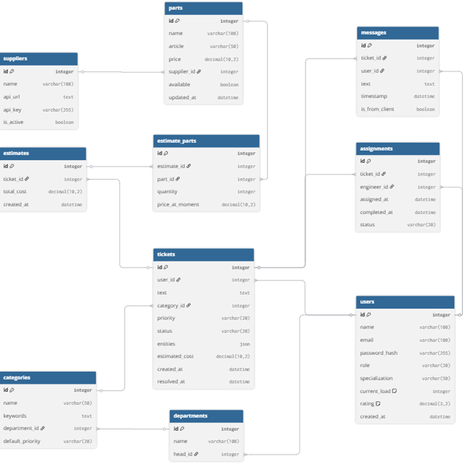
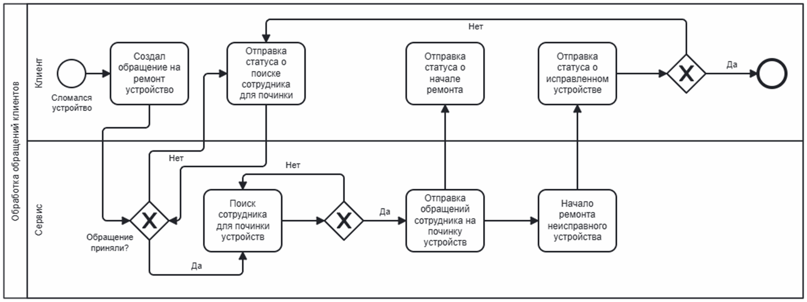
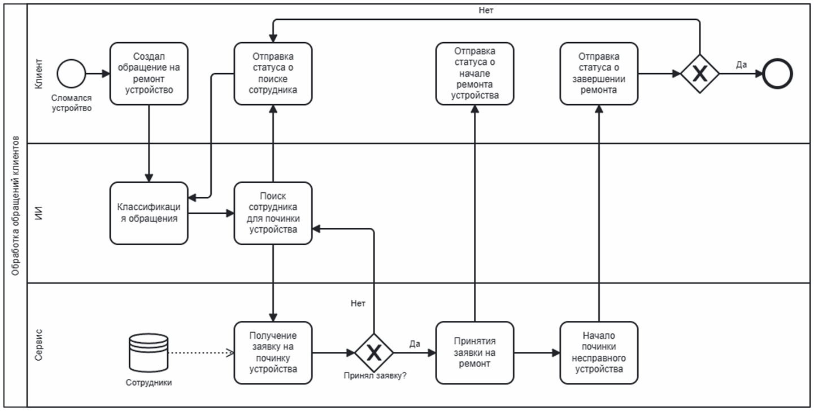

Актуальность: почему автоматизация неизбежна?
Предисловие. Рост обращений в техподдержку составляет 20–30% ежегодно. При ручной обработке свыше 10 000 заявок время реакции превышает 2 часа, конверсия в ремонт не выше 40%. Простой оборудования — до 100 000 руб./час, зарплата оператора — 40–50 тыс. руб./мес. Готовые боты не выделяют сущности («дисплей Apple») и не рассчитывают стоимость. Создание собственной интеллектуальной системы — экономически обоснованная необходимость.
Рост обращений +20–30% ежегодно
10 000+ заявок → очереди, ошибки. Простой: до 100 тыс. руб./час.
Загрузка сервис-центра (2025)
Операторы загружены на 85% рутинными операциями. Время на заявку ~12 мин.
Анализ и выбор NLP-модели
Исследованы RuBERT, LaBSE, GPT и Naive Bayes. Критерии: точность (F1), качество NER, скорость, стоимость.
| Модель | F1-мера | NER (1-10) | Скорость (с) | Стоимость | Вывод |
|---|---|---|---|---|---|
| RuBERT | 0.93 | 9 | 0.3 (GPU) | бесплатно | ✅ Выбрана |
| LaBSE | 0.87 | 2 | 0.4 | бесплатно | ❌ |
| GPT (API) | 0.91 | 6 | 1-2 | дорого | ❌ |
| Naive Bayes | 0.76 | 1 | 0.01 | бесплатно | ❌ |
Выбор технологического стека
Языки программирования
Python ✓ выбран
HuggingFace, PyTorch. Инференс RuBERT – 4 строки.
Java ❌
Нет готовых русских BERT-моделей.
Go ❌
Экосистема NLP отсутствует.
Node.js ❌
TensorFlow.js не поддерживает BERT.
Системы управления базами данных
PostgreSQL ✓ выбран
ACID, внешние ключи, JSONB.
MongoDB ❌
Нет внешних ключей, слабые JOIN.
SQLite ❌
Плохая конкурентность.
MsSQL ❌
Закрытая экосистема, высокая стоимость.
Логическая схема БД
Основные сущности: tickets, spare_parts, employees, assignments. Внешние ключи гарантируют целостность.

Таблицы: suppliers, estimates, categories, departments, tickets, messages, assignments, users
Моделирование бизнес-процесса
Сравнение "как было" (ручная обработка) и "как стало" (интеллектуальная система).
«Как было»

«Как стало»

Экономическая эффективность
10 000 обращений/год, средний чек 5 000 руб. До: ФОТ 1,2 млн руб. После: поддержка 200 тыс. руб. Конверсия: 40% → 65%.
Демонстрация кода (Python + FastAPI + RuBERT)
from transformers import AutoTokenizer, AutoModelForSequenceClassification
import torch
model_name = "DeepPavlov/rubert-base-cased-sentence"
tokenizer = AutoTokenizer.from_pretrained(model_name)
model = AutoModelForSequenceClassification.from_pretrained("./finetuned_rubert")
def analyze_ticket(text):
inputs = tokenizer(text, return_tensors="pt", truncation=True, padding=True)
with torch.no_grad():
logits = model(**inputs).logits
category = torch.argmax(logits).item()
entities = extract_entities(text) # NER-модуль
return {"category": ["hardware","software"][category], "entities": entities}
from fastapi import FastAPI
app = FastAPI()
@app.post("/api/analyze")
async def analyze(request: dict):
result = analyze_ticket(request["text"])
# сохранение в PostgreSQL
await conn.execute("INSERT INTO tickets ...")
return resultЗаключение и перспективы
Научная новизна: впервые предложена полностью автономная система на базе RuBERT для техподдержки с модулем подбора запчастей и маршрутизацией.
Практическая значимость: ускорение в 360 раз, экономия 83%, окупаемость < 1 месяца, рост конверсии до 65%.
Перспективы: генеративные модели, мультиязычность, интеграция с CRM, дашборды аналитики.